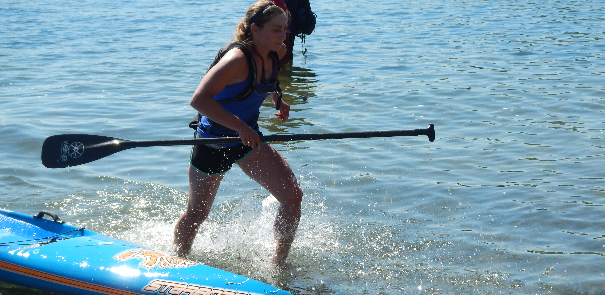

Sarah's Finishes
- Columbia Gorge Downwind Paddle Challenge 2013
- Columbia Gorge Downwind Paddle Challenge 2014
- Round the Rock 2014
- Round the Rock 2013
- Urban Surf Summer SUP Series 2014
- Urban Surf Summer SUP Series 2013
- St Paddle's Day Race 2014
- St Paddle's Day Race 2013
- Board the Fjord 2014
- Ballard Elk's Race Series 2014
- Ballard Elk's Race Series 2013
- Seafair SUP Race 2014
- Seafair SUP Race 2013